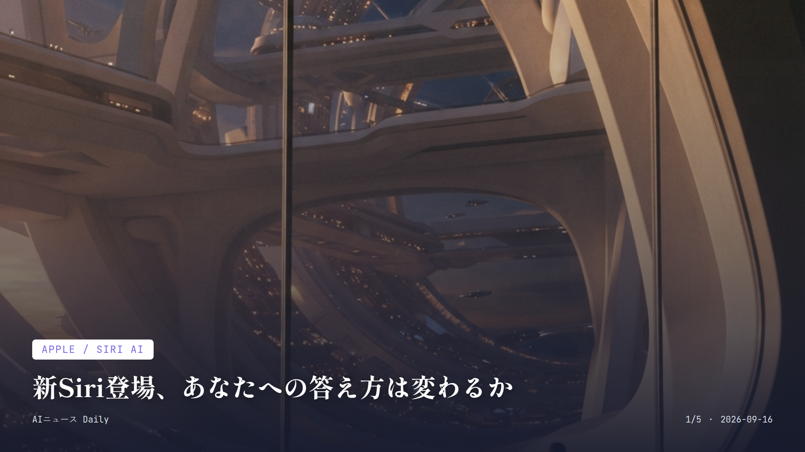
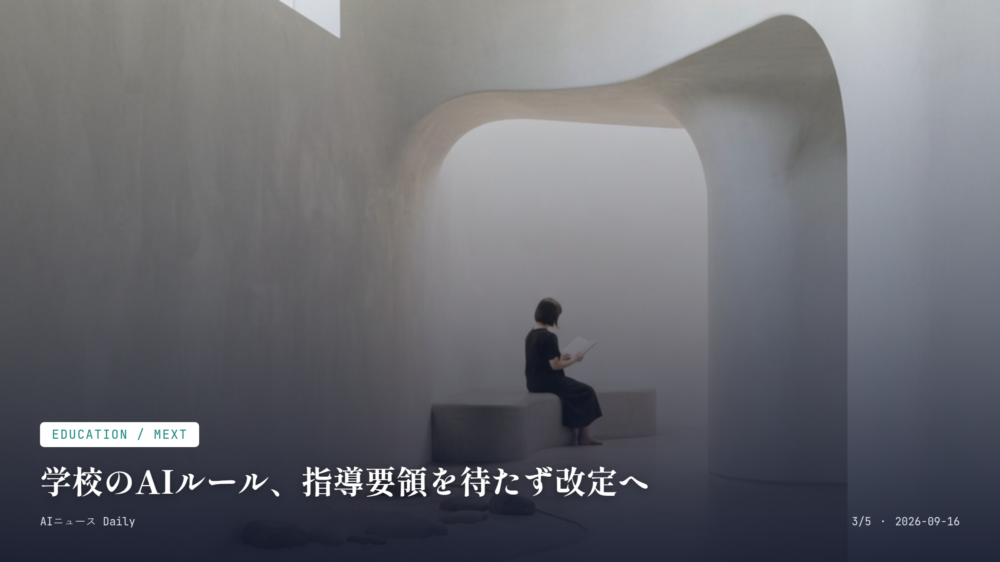
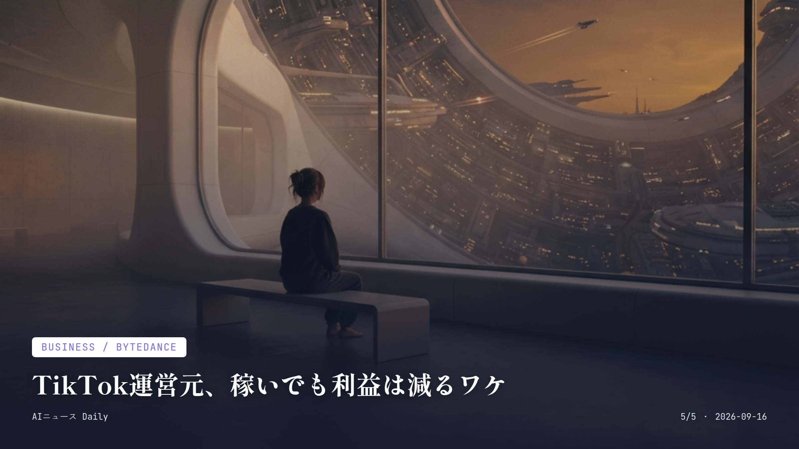

これは2026-09-16時点のアーカイブページです。最新のニュースはこちら
本サイトはアフィリエイトプログラムによる収益を得ている場合があります。
本サイトはGoogle AdSense等の広告配信サービスを利用しています。

Apple / Siri AI
約1分で読める
新Siri登場、あなたへの答え方は変わるか
iOS 27でSiriが刷新、裏側にGoogle技術も
Appleが9月15日配信のiOS 27から、刷新版の音声アシスタント「Siri AI」を配り始めた。画面に映っている中身を理解できるようになったのと、複数のアプリをまたいで一連の作業を片付けられるようになったのが今回の目玉だ。
まずは英語圏でベータ版として先行スタート。日本語・フランス語・韓国語・ポルトガル語・スペイン語のベータ版は10月から順次追いかける形で始まる予定になっている。
裏側の技術基盤にはGoogleのGeminiモデルとの連携があるとされていて、両社の提携がようやく消費者の手元に届いた最初の事例として注目を集めている。
ただし使うにはiPhone 15 Pro／15 Pro Maxやそれ以降の機種が必要になるなど条件があるので、全員がすぐに体感できるわけではない。そこは覚えておきたい。
なぜ重要か
世界で20億台以上動いているとされるAppleデバイスの音声アシスタントが刷新される。これって、多くの人が毎日触るツールの体験そのものが変わるということだ。GoogleのAI技術がAppleの主力製品に組み込まれる初の大型事例という点でも見過ごせない。
出典：Apple公式発表・国内メディア報道 / 2026年9月15日
AI & Health
約1分で読める
AI相談、効果とリスクが同時に浮上
チャットボット依存めぐり、米各州で規制が本格化
生成AIチャットボットを安上がりな「心の相談相手」として使う人が増えている中、既に精神疾患を抱える利用者では症状が悪化したケースが報告され始めている。デンマークの研究チームが専門誌に出した論文では、妄想の悪化や自殺念慮が新たに出てきた例も確認されたという。
その一方で英国では、AIチャットボットがメンタルヘルスサービスへの窓口を広げ、利用者を増やしたとする研究成果もネイチャー・メディシン誌に載っている。効果とリスク、両方の顔が同時に見えてきた格好だ。
米国ではイリノイ・ネバダ・ユタなど複数の州で「AIセラピスト」を規制する法律が既に成立していて、行政側の動きも急ピッチになっている。
なぜ重要か
誰でも無料で使えるAIチャットボットが、悩みや不安を打ち明ける相手として日常に入り込んでいる。その効果とリスクが同時に科学的に指摘され始めたということは、使う側にも一段の注意が求められる段階に来たということだ。
出典：Medical Tribune、MIT Technology Review Japan ほか / 2026年

Education / MEXT
約1分で読める
学校のAIルール、指導要領を待たず改定へ
文科省、生成AI活用の指針を前倒しで見直し
文部科学省が、学校での生成AI活用について次期学習指導要領の改訂を待たずガイドラインを速やかに見直す方針を打ち出した。生成AIの普及があまりに速く、現場の知見もどんどん積み上がっているための対応らしい。
2026年度は、授業での教育利用や教職員の校務利用、教材実証など複数の枠組みでパイロット校を指定し、全国の自治体・学校で実践事例を積み上げている最中だ。
校務での活用は教員の長時間労働解消にもつながるとされていて、既に多くの自治体が研修や実証に参加している。
なぜ重要か
子どものいる家庭にとって、学校で生成AIがどう使われるかは意外と身近な話だ。制度改定を待たずルール整備が前倒しで進むのは、教育現場の変化のスピードが増している証拠でもある。
出典：ReseEd（教育業界ニュース）/ 2026年
Robotics
約1分で読める
柵なしで働くロボ、工場の常識を変えるか
人型ロボ「Digit 5」、人のそばで安全に稼働
米Agility Roboticsが9月15日、人型ロボット「Digit 5」を発表した。これまでは安全柵の中でしか動けなかったが、新型はAIとセンサーで周りの人を感知し、避けたり止まったり座り込んだりすることで、柵なしでも人のすぐそばで作業できるようになった。
可搬重量は約16kgから約23kgへとアップし、90分の稼働に対して9分でフル充電できる設計。既にSchaefflerやGXO Logistics、トヨタの北米工場など9拠点で導入が進んでいるという。
Agility RoboticsはSPAC（特別買収目的会社）との合併で上場を準備中で、既に3億ドル超の複数年契約を獲得済みだ。
なぜ重要か
倉庫や工場で人と機械が同じ空間で働く時代が、もうすぐそこまで来ている。物流・製造業で働く人にとっては、職場に人型ロボットという新しい同僚が加わる未来を具体的に想像させるニュースだ。
出典：TechCrunch、GeekWire / 2026年9月15日

Business / ByteDance
約1分で読める
TikTok運営元、稼いでも利益は減るワケ
ByteDance、AI投資かさみ上期純利益が減少
TikTokを運営する中国ByteDanceの2026年上期決算は、売上高が前年比約30%増の1200億ドルに達した一方で、純利益は一桁台のパーセンテージで減り、200億ドルにとどまったと報じられている。
利益が伸び悩んだ最大の理由は、AIインフラへの積極投資だとされる。2025年通期の売上高は約2000億ドルで前年比29%増加していて、成長そのものは止まっていない。
売上が伸びても利益が圧迫される、というこの構図こそ、AI開発競争のコストの重さを物語っている。
なぜ重要か
世界的な人気アプリを抱える巨大企業ですら、AI投資の負担で利益が圧迫される。この現状は、AI開発競争がどれほどお金を食う戦いなのかを物語っている。今後のサービス価格や機能に跳ね返る可能性も十分ある。
出典：The Information（AI Weekly経由）/ 2026年9月15日
AI Infrastructure
AI Infrastructure
約1分で読める
Nvidia包囲網、200億円で挑む新興企業
Cornelis Networksが資金調達、AI接続技術で勝負
半導体大手Intelからスピンオフしたネットワーク企業Cornelis Networksが、IAG Capital Partners主導の2億500万ドル資金調達を完了したと発表した。
新たに発表した「Active Compute Fabric」は、AIチップ同士がデータをやり取りする際の「待ち時間」を減らし、GPUの稼働効率を上げる技術だ。オープンな設計を採っているので、様々なGPUやアクセラレーターと組み合わせられる。そこがNvidiaの専用設計との違いになる。
Qualcommとの協業も発表していて、Nvidia一強とされてきたAI向けネットワーク市場に一石を投じる動きとして注目されている。
なぜ重要か
AIブームの裏側では、GPUをつなぐネットワーク技術という「地味だけど効いてくる」領域でも競争が始まっている。この分野のコストや効率化は、いずれAIサービスの価格や性能にじわじわ影響してくる話だ。
出典：TechCrunch / 2026年9月14日
Web / Cloudflare
Web / Cloudflare
約1分で読める
検索とAI学習、線引きの時代へ
Cloudflareの新ポリシー、9月15日から適用開始
大手インフラ企業Cloudflareが7月に発表していた、検索用クローラーとAI学習・エージェント収集用クローラーを区別する新方針が、9月15日から実際に適用され始めた。両方の性質を併せ持つ「複合型」AIクローラーは、広告収入で成り立つページで原則ブロックされることになる。
対象になるのは新規顧客、新しく追加されたサイト、そして無料プランの利用者。既存の有料契約者はこれまでの設定がそのまま維持される。
検索エンジンのインデックス作成は引き続き許可される一方、AI学習用やエージェントによる情報取得は原則ブロック対象になる。汎用的なウェブ巡回に頼っているAIサービスにとっては、情報の取り方が不安定になりそうだ。
なぜ重要か
普段何気なく検索やAIチャットで情報を得ている人にとって、その裏側にあるウェブサイトとAI企業の関係が変わるのは無関係な話ではない。今後使うAIサービスの精度や情報源の幅にも響いてきそうだ。
出典：AI Weekly / 2026年9月15日
先頭に戻る